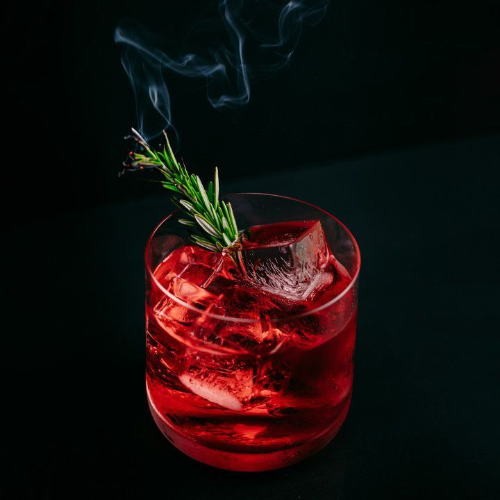

Mezcal Negroni
메즈칼 네그로니
#독특한 취향 #힙합 #매운 #탄산 없음 #높은 도수

Ingredients
- 메즈칼 30ml
- 스위트 버몬트 30ml
- 캄파리 30ml
- 장식용 오렌지 껍질
- 얼음 100g
Recipe
- 믹싱 글라스에 얼음을 채워줍니다.
- 메즈칼 30ml, 스위트 버몬트 30ml, 캄파리 30ml를 넣습니다.
- 재료를 잘 섞어줍니다.
- 칵테일 글라스에 얼음을 채우고 섞은 재료를 따라줍니다.
- 마지막으로 오렌지 껍질을 장식으로 올려주면 완성!
History
메즈칼 네그로니(Mezcal Negroni)는 진 대신 용설란 식물로 만든 연기가 자욱한 멕시코 증류주인 메즈칼로 대체한 네그로니 변형입니다.
메즈칼은 원료를 불에 구워 특유의 훈연향이 배이므로 메즈칼은 테킬라보다 호불호가 갈리는 편입니다. 그럼에도 불구하고 인기는 날로 높아지고 있는데 멕시코에서는 ‘스트레이트'로, 즉 그냥 마시는 게 일반적이며 테킬라와 비슷하게 썬 오렌지와 튀긴 번데기 가루, 고춧가루, 소금을 함께 곁들여서도 마십니다. 반면 멕시코 바깥에서는 칵테일, 특히 올드패션드나 네그로니 같은 고전 칵테일의 바탕술로 활발히 쓰입니다.